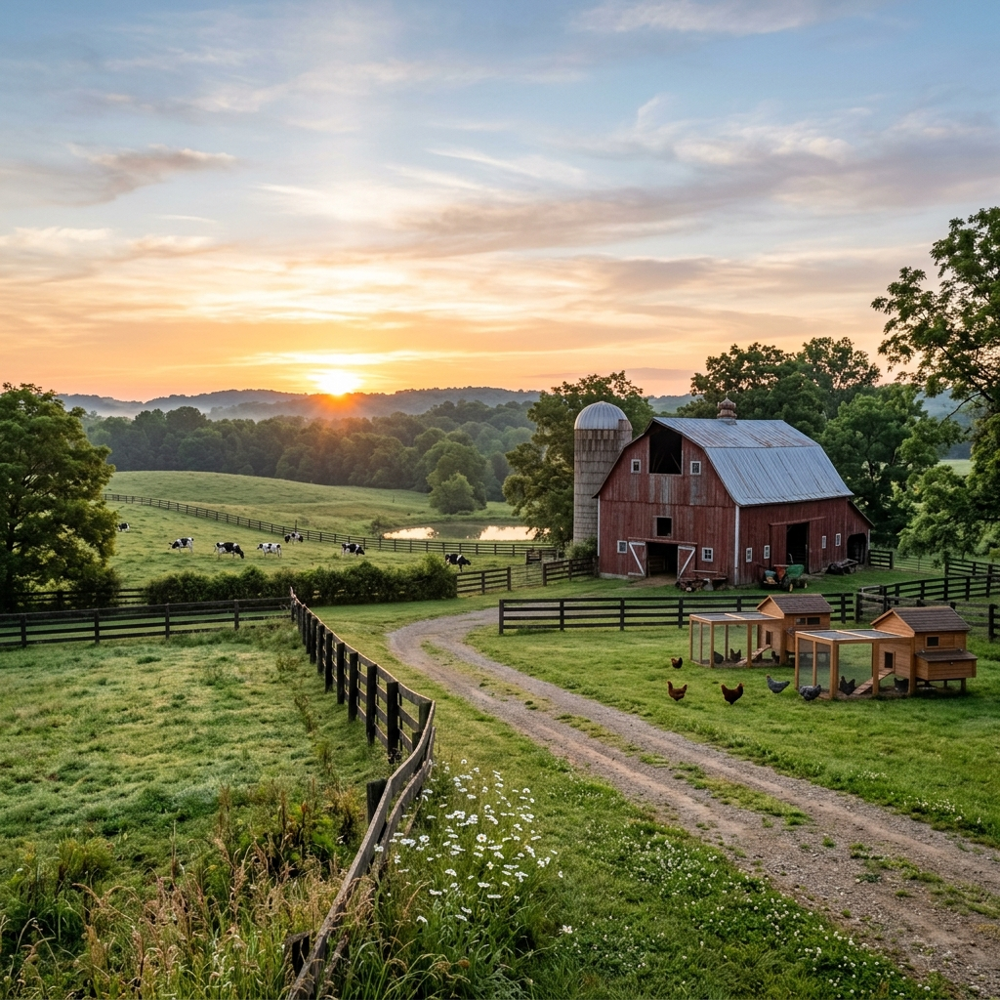
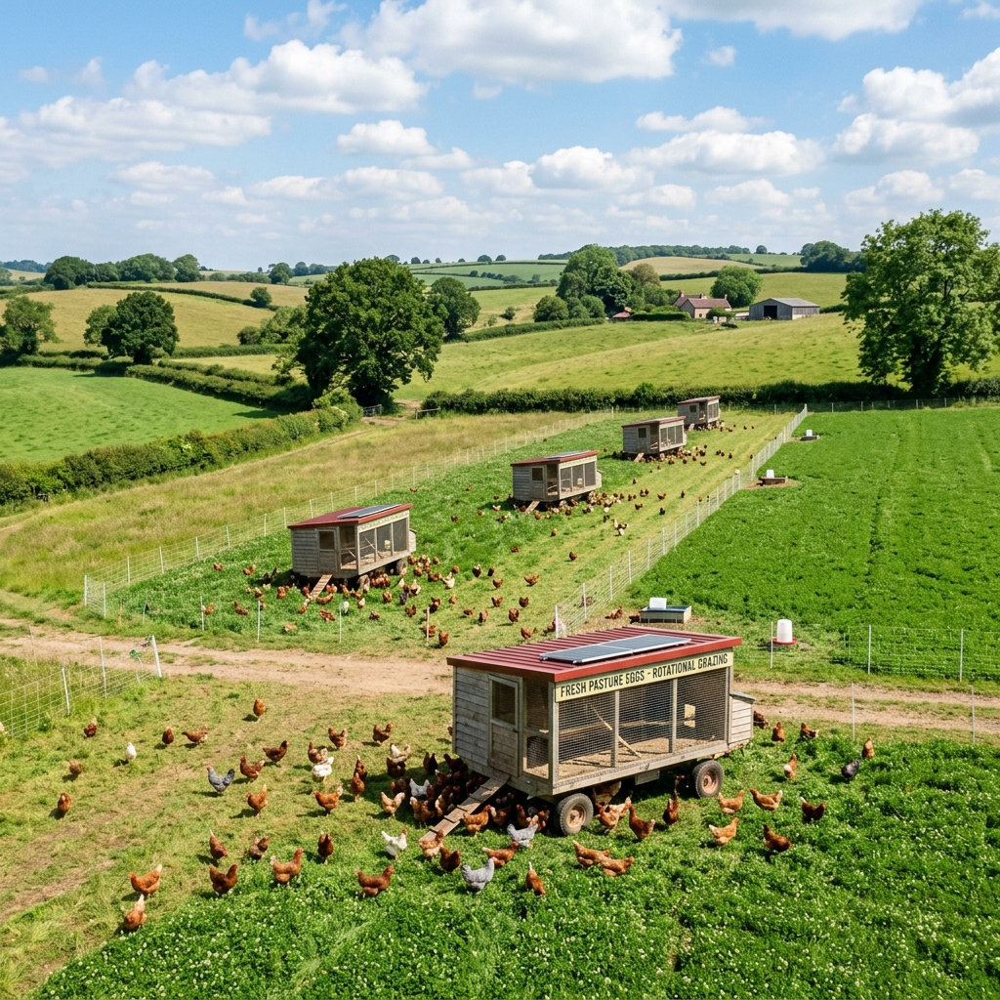
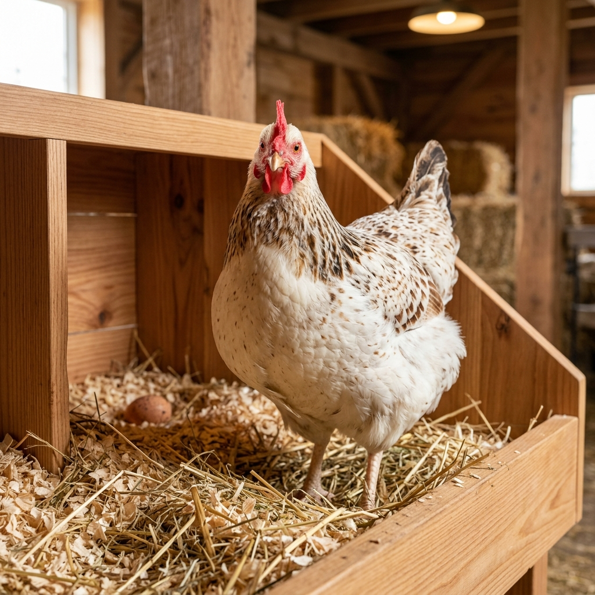
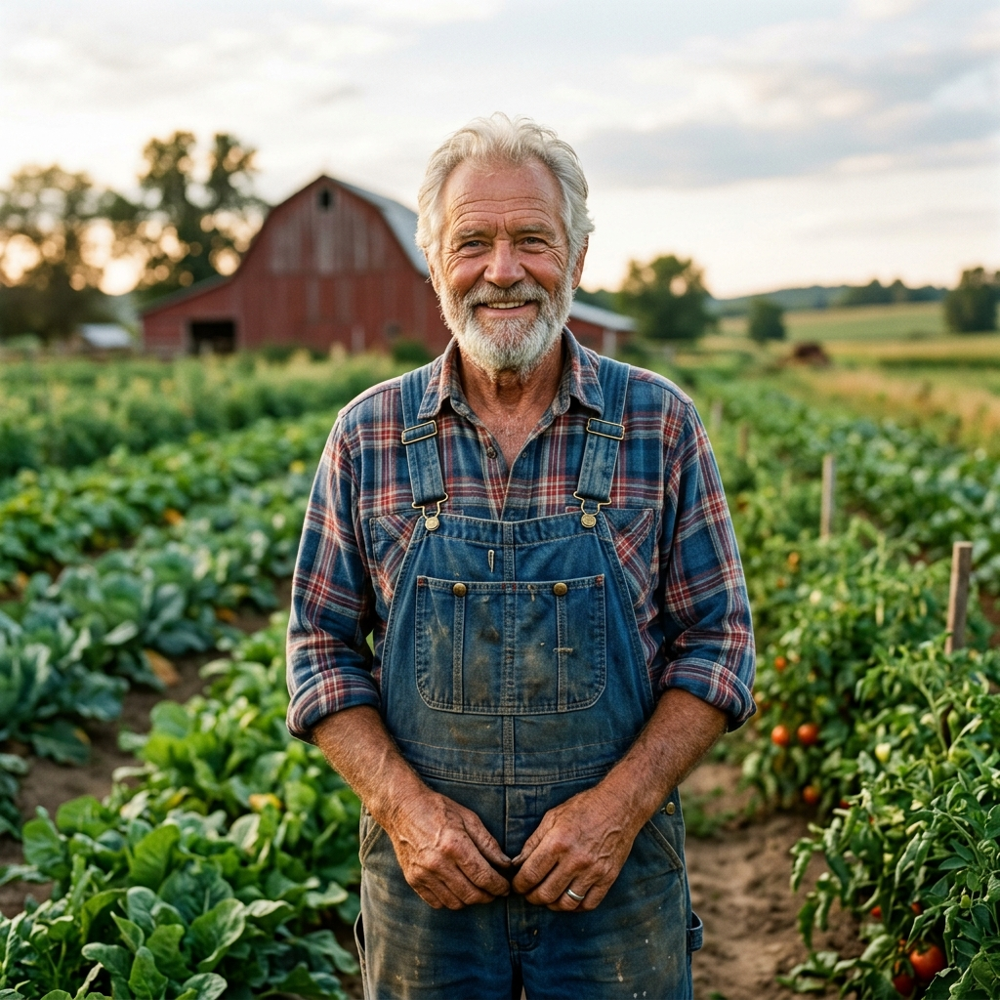
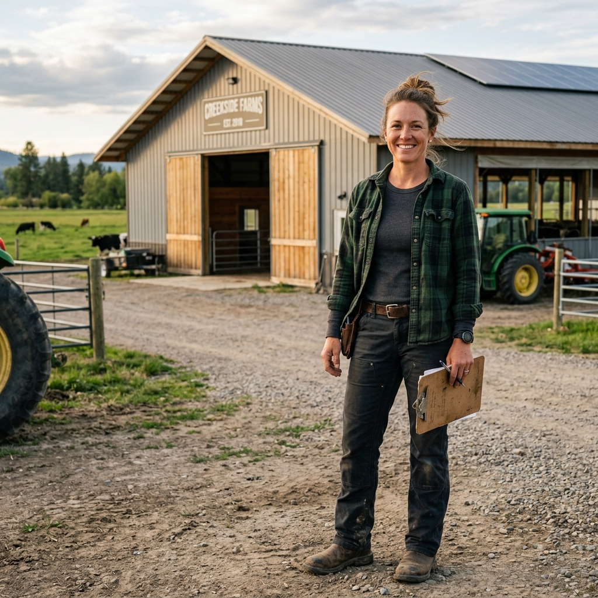
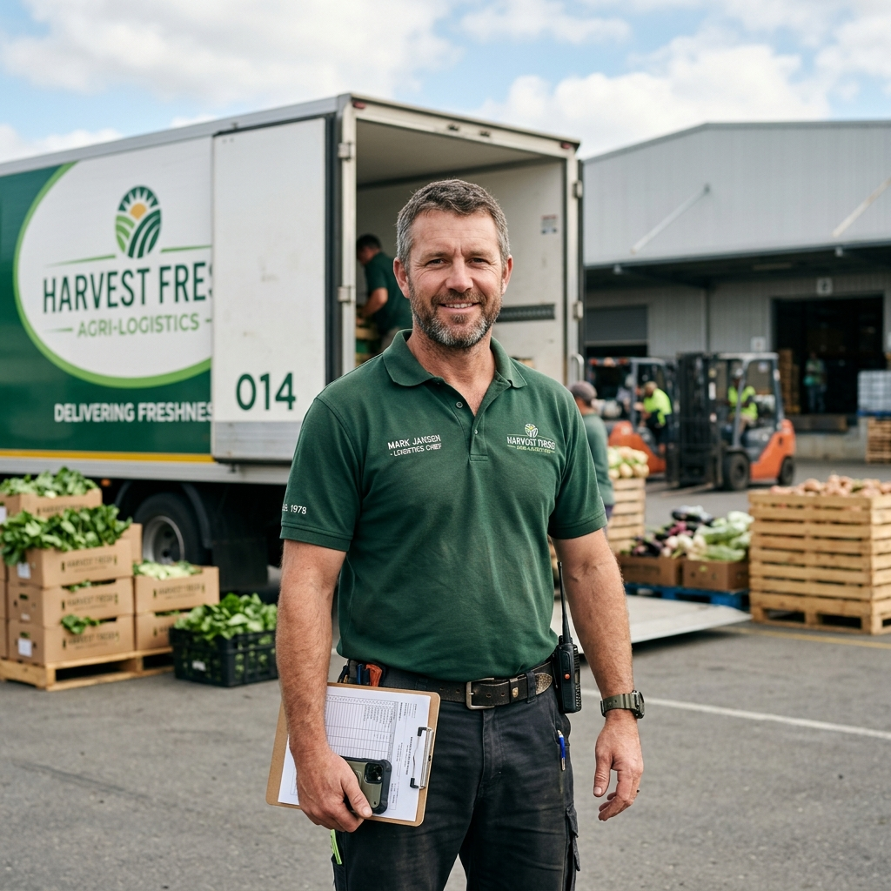

Nurturing Fields, Ethical Flocks
Learn the history of our pasture egg farm. We combine generations of traditional husbandry with modern ecological sciences to yield superior farm products.

Our Farm Story
Tracing our journey from a small three-acre pasture coop to a community staple.
1994 - The First Coop
Arthur Vance purchases 5 acres in Farmville. Armed with 50 Rhode Island Red hens, he begins selling fresh backyard eggs to neighbors from a folding table.
2005 - Pasture Expansion
Poultry Egg Farm expands to 40 acres, establishing rotated pasture systems where chickens run cage-free and play vital roles in soil regeneration cycles.
2015 - Sustainable Tech
Arthur's daughter Clara takes leadership. She installs state-of-the-art solar panels for the washing facilities and sets up a computerized temperature monitoring grid.
2026 - Direct Sales Leader
Operating a refrigerated logistics fleet delivering farm-to-table products directly to local homes, catering partners, and high-end organic grocers.
Regenerative Farming Practices
Our farming techniques improve soil biology, sequester carbon, and guarantee top quality animal welfare standards.
Pasture Rotation Protocols
We do not keep chickens in static yards where soil quickly degrades. Instead, we rotate our coops to fresh pasture quadrants every week.
This allows the plants to recover, fertilizes the topsoil naturally with manure, and provides our chickens with a rich supply of fresh weeds, clover, and pasture insects.


Animal Welfare Standards
We are certified humane by international organizations. Our coops are spacious, clean, and filled with natural daylight.
- ✔ Minimum 108 sq. feet of pasture space per bird.
- ✔ Nesting boxes lined with organic pine shavings.
- ✔ Protected dust bath zones to encourage natural cleaning behaviors.
- ✔ Zero beak trimming or artificial lighting schedules.
Meet the Farm Team
The dedicated crew ensuring your eggs are clean, fresh, and delivered on schedule.

Arthur Vance
Founder & Flock Elder
Clara Vance
General Manager & Scientist